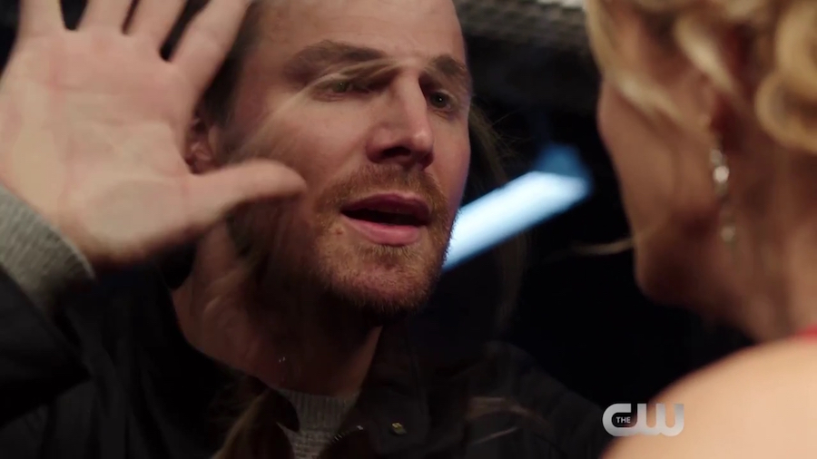

Arrow S04|E09 Dark Waters
After focusing so much attention on paving the way for Legends of Tomorrow and bringing other DC heroes into the fold, Arrow really needed a “back to basics” episode that re-focused the conflict on Damien Darhk. That’s exactly what this episode delivered tonight. No pointless filler (unless you’re the type that despises romantic drama), just a good, old-fashioned showdown between Team Arrow and their gleefully maniacal foe. And a pretty gut-wrenching cliffhanger to boot.
Neal McDonough has been terrifically entertaining in every episode he’s appeared this season, so it pretty much goes without saying that he was the highlight of this week’s big Christmas holiday conflict. He’s endlessly charming despite being a terrifying force of nature. As we saw, Damien isn’t at all shy about admitting that he’s the bad guy in this conflict. Whereas the show’s other overarching villains did what they did either because they saw themselves as being in the right or just out of a thirst for revenge, Darhk enjoys being the mustache-twirler. He just doesn’t want to be too public about it.
That was the crux of the conflict this week. Ollie realized that the only way to hurt Darhk was to drag him out of the shadows and into the public eye. For the first time, we saw Darhk lose his cool and suffer a defeat. But naturally, the only thing more deadly than a cheerful Darhk is an angry Darhk. From the moment he Force-choked the TV, it was clear something terrible was going to happen to Ollie and his friends. It was only a question of what and when.
That led to a great scene where Darhk crashed Ollie’s holiday party and took the rest of Team Arrow as his hostages. Sure, it was more than a little reminiscent of a certain scene from The Dark Knight. But this show has been better lately about not dipping into the Batman well too often, so I can forgive them that. Between the party scene and Darhk’s guided tour of his gas chamber facility, this was easily the villain’s most memorable episode to date. I suspect it also had the most Darhk screen time of any single episode by a wide margin.
This episode wouldn’t have worked very well if it were singularly focused on the Darhk conflict. Viewers needed a reminder of what Ollie is fighting for and what he stands to lose by crossing Darhk. That’s why it was good to see some attention paid to relationship drama and even a healthy dose of humor thrown in for good measure. One of the reason Flash sometimes outdoes its sister series is the free and easy banter among the various characters (Barry, Cisco, caitlin, etc.). There’s a lighthearted charm to The Flash you don’t always find on this show. But it was present in this episode. Felicity and her mother accidentally discovering Ollie’s engagement ring led to a fun little conflict. The writers could have played up that plot point for more drama, but it’s just as well they didn’t. You can’t really blame Ollie for putting his proposal on hold while dealing with the Darhk problem. And really, if anything is going to be the catalyst for a real Ollie/Felicity rift, it’s the revelation from last week about his secret son.
Instead, the engagement fiasco injected a little extra entertainment value into the episode as Felicity struggled and failed to pretend she didn’t know. Later, it led to a touching scene where she and Ollie exchanged silent “I love you’s” when Felicity’s death by gas chamber seemed certain. And it culminated with a touching proposal. Despite last week’s drama, things seem to be looking up for Olicity. Or they did, right up until that cliffhanger…

There were some other great moments to be had this season. The Malcolm/Laurel team-up was certainly an unexpected treat. We’ve seen Diggle borrow the Arrow costume a few times, but Malcolm proved he can rock the green as well. The action in this episode didn’t quite live up to the standard set by recent episodes (especially the stellar “Brotherhood”), but at least Ollie and Malcolm’s battle with Darhk stood out. And kudos to Laurel for actually accomplishing something with that seemingly useless Canary Cry.
Elsewhere, Diggle enjoyed a couple of strong scenes with his brother. The Andy subplot has been a welcome chance for David Ramsey to flex his dramatic muscles a bit, while also offering some insight into the bond between Darhk and his faithful Ghosts. It’s hard to say which, but either through loyalty of fear, Andy still isn’t saying word one about his leader.